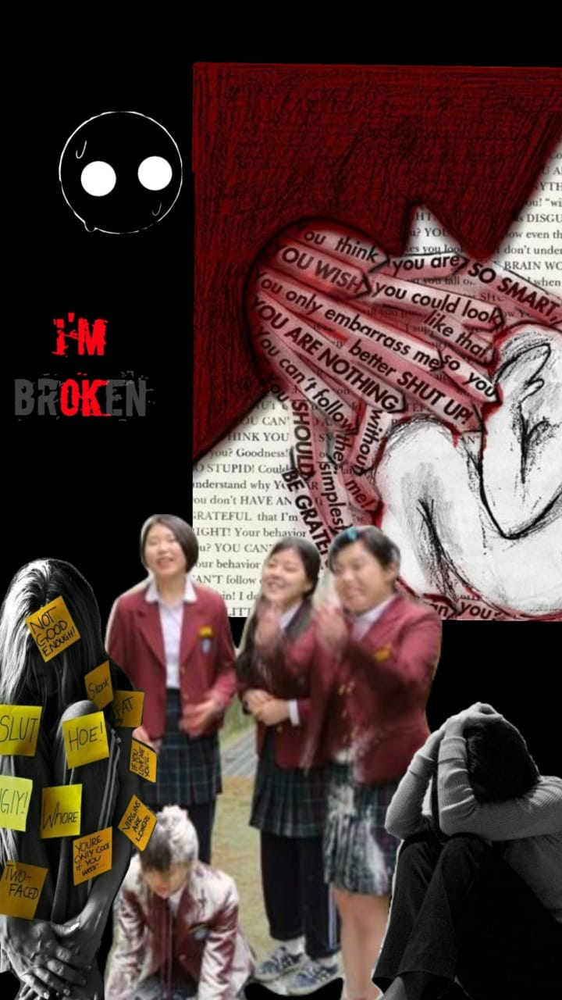

Now like i said some peoples reponse to bullying is to fight back but for a majority that is not always the case.Some after bullying may either attempt or succed in suicide.However the most visible responses are anxiety,depression,low academic performance and social withdrawal.Korean dramas make it look so cool and fun because a majority of the victims fight back while a minority suffer queitly.Now i know suicide seems a bit too much as a response but trust me this kind of thing happens especially when the victim can`t do anything.
So this is what i ask of you,don`t bully others because you do not know what their going through especially cyberbullying.In fact cyberbullying is a serious crime in Zimbabwe.Do not be a wet towel and also its costs $0 to be kind please,it can change a persons day.